all transients in sector11 (22 total)
Each figure has three panels. The top panel shows the transient light curve, the middle panel shows the local background (estimated in an annulus), and the bottom panel shows a "background-model corrected" light curve. Details about the background model are in the README.
The vertical red line marks the time of discovery reported to TNS. Other useful metadata from TNS is in the figure title.
Note that the top and bottom panel are in magnitudes, while the middle panel is in differential flux units. The magnitudes are calibrated to the flux in the reference image used for image subtraction. Thus, flux from the host galaxy is included in these magnitudes.
3-sigma upper limits are plotted as triangles with no errorbars. A typical limiting magnitude is 19.6 in 30 minutes or 18.4 in 200 seconds (for low backgrounds).
The links allow you to download the light curve data as a text file.
More details in the README.
2019egw
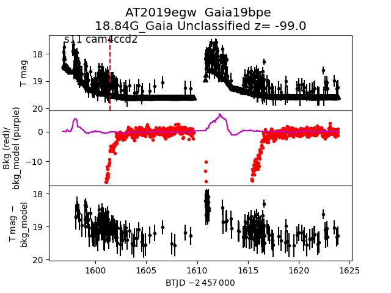
2019fis
 2019ekn
2019ekn
 2019fcc
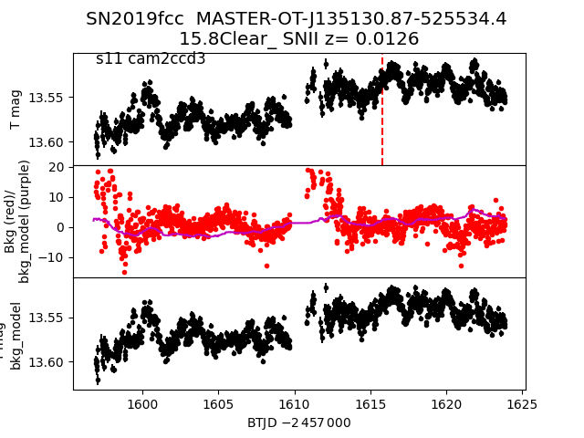
2019ehv
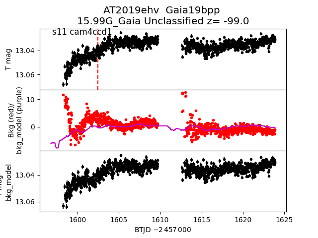
2019ekk
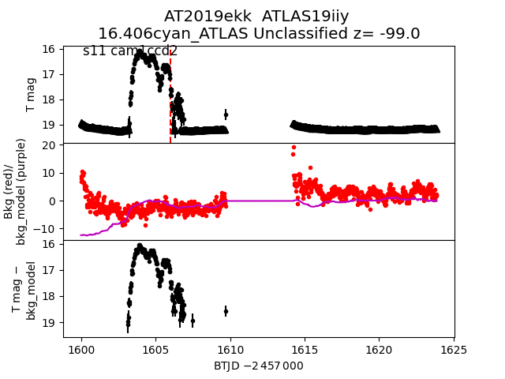
2019esa
2019fcc
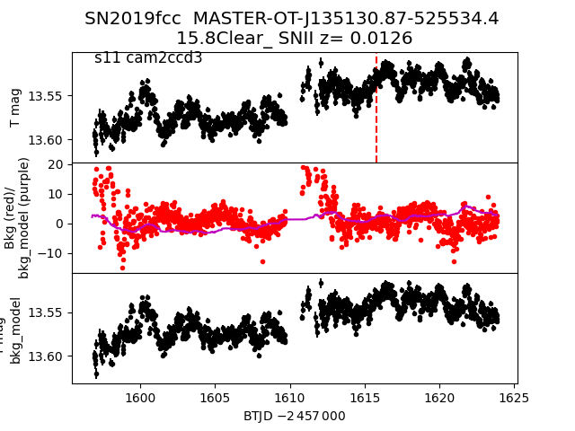
2019ehv
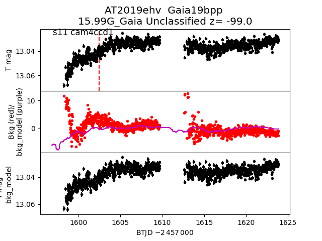
2019ekk
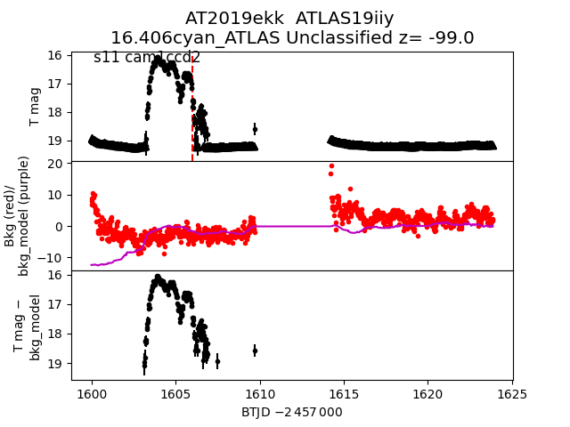
2019esa
 2019ebe
2019ebe
 2019esm
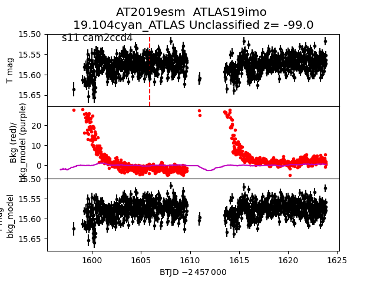
2019ehy
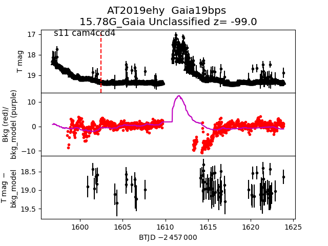
2019ekp
2019esm
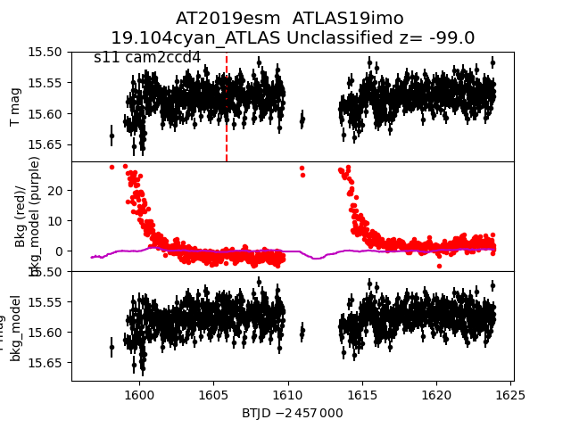
2019ehy
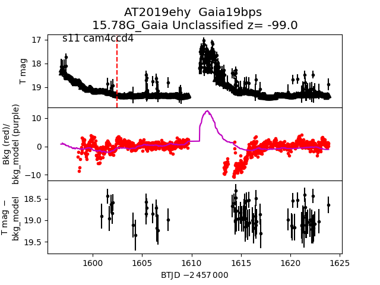
2019ekp
 2019fir
2019fir
 2019dzc
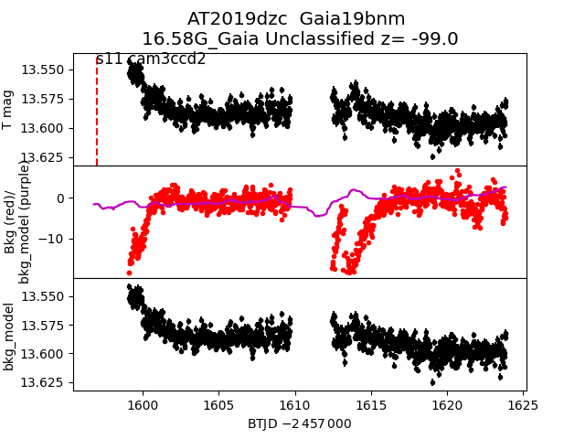
2019esl
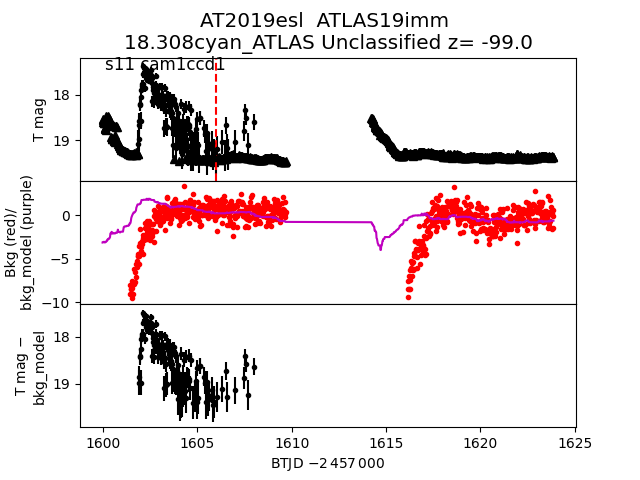
2019edh
2019dzc
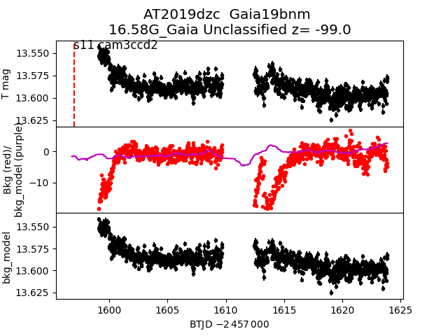
2019esl
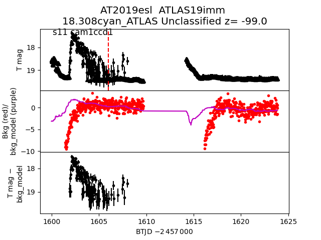
2019edh
 2019fjs
2019fjs
 2019ehx
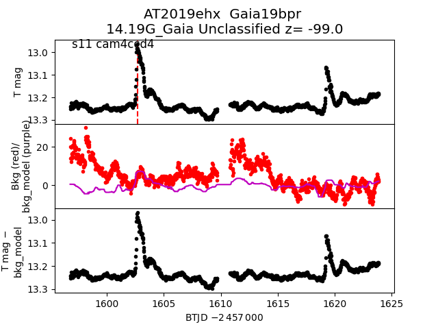
2019exu
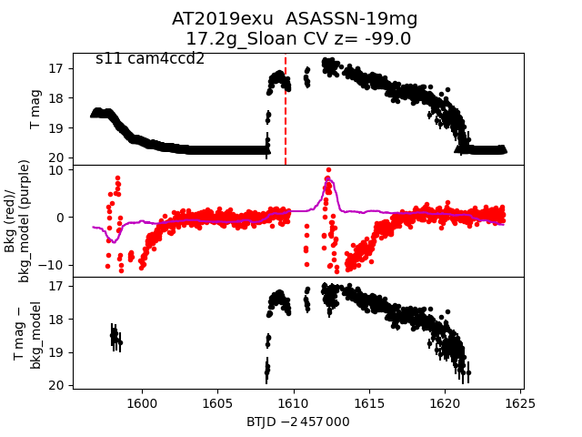
2019gws
2019ehx
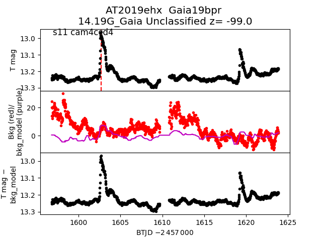
2019exu
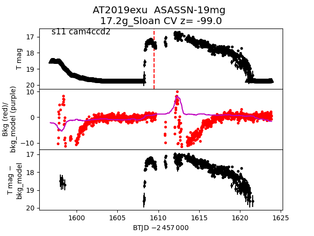
2019gws
 2019dwl
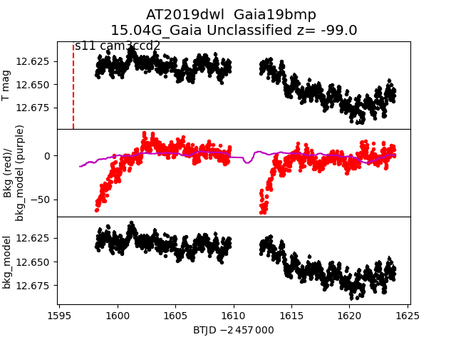
2019ebh
2019dwl
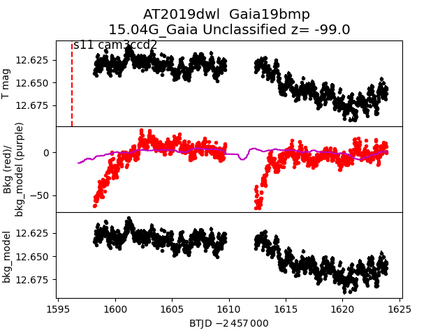
2019ebh
 2019erz
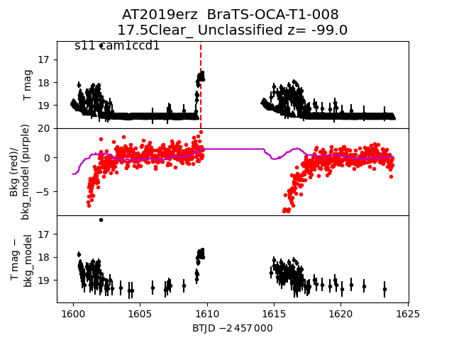
2019erz
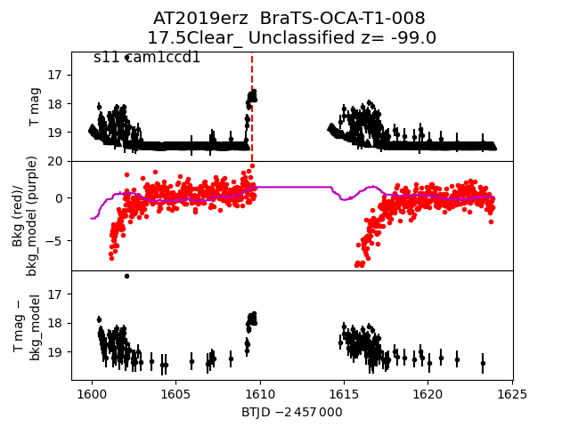